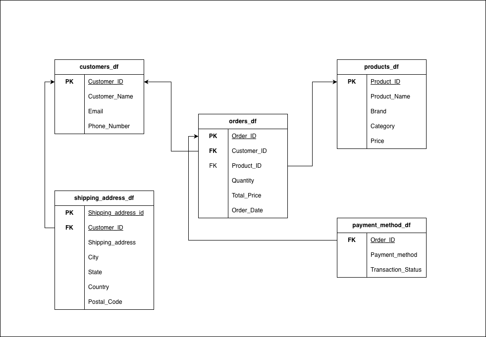

Yanki E-commerce Data Pipeline
E-commerce Data Pipeline and Analytics Case Study

A full data engineering project that extracts messy e-commerce CSV data, cleans and normalizes it with Python, models it for PostgreSQL, validates the outputs, and prepares the business for SQL reporting, customer analysis, revenue tracking, and window-function insights.
The project demonstrates end-to-end data engineering skills including ETL development, data modeling, database design, automated testing, and business analytics. The pipeline transforms raw, denormalized e-commerce data into a clean, relational structure suitable for production analytics workloads.
Business Problem
The company had valuable sales history, but the raw structure mixed orders, customers, products, shipping information, and payment details together. That made it harder to detect revenue trends, understand customer value, monitor transaction success, and prepare reliable PostgreSQL tables for reporting.
- Extract historical e-commerce data from CSV files.
- Clean missing values, duplicate rows, and inconsistent date formats.
- Normalize the dataset into relational tables with keys and references.
- Load the modeled data into PostgreSQL for durable analysis.
- Answer business questions using joins, CASE logic, rankings, and window functions.
Pipeline Design
The pipeline separates engineering concerns clearly: read safely, clean consistently, normalize into tables, persist outputs, and validate the final structure before analysis begins.
- Extract - Read the raw Yanki e-commerce CSV with a safe loader that logs successful loads and failures.
- Clean - Remove unusable records, coerce order dates, and reduce duplicate rows that would distort reporting.
- Normalize - Split the wide source into customers, products, shipping addresses, orders, and payment methods.
- Load - Create a PostgreSQL schema and insert clean CSV data into relational tables with foreign keys.
- Validate - Run schema checks and automated tests to confirm expected files, columns, and non-empty outputs.
Entity Relationship Diagram
The normalized database schema consists of five tables with proper foreign key relationships, enabling efficient querying and maintaining data integrity.

Tables: customers, products, shipping_addresses, orders, payment_methods
ETL Normalization
The raw file is transformed into five clean tables. Each table keeps only the columns needed for its entity, then duplicates are removed before saving the outputs.
customers_df = df[["Customer_ID", "Customer_Name", "Email", "Phone_Number"]].drop_duplicates()
products_df = df[["Product_ID", "Product_Name", "Brand", "Category", "Price"]].drop_duplicates()
orders_df = df[["Order_ID", "Customer_ID", "Product_ID", "Quantity", "Total_Price", "Order_Date"]].drop_duplicates()
payment_method_df = df[["Order_ID", "Payment_Method", "Transaction_Status"]].drop_duplicates()PostgreSQL Modeling
The database layer creates a dedicated yanki schema, defines primary keys and foreign keys,
and loads CSV rows with conflict handling for repeatable execution.
CREATE TABLE yanki.orders (
Order_ID UUID PRIMARY KEY,
Customer_ID UUID REFERENCES yanki.customers(Customer_ID),
Product_ID UUID REFERENCES yanki.products(Product_ID),
Quantity INTEGER,
Total_Price FLOAT,
Order_Date DATE
);Analytics Capabilities
The normalized schema enables complex analytical queries including:
- Customer lifetime value analysis with window functions
- Product performance rankings and category analysis
- Revenue trends by date, location, and payment method
- Transaction success rates and failure analysis
- Geographic distribution of customers and orders